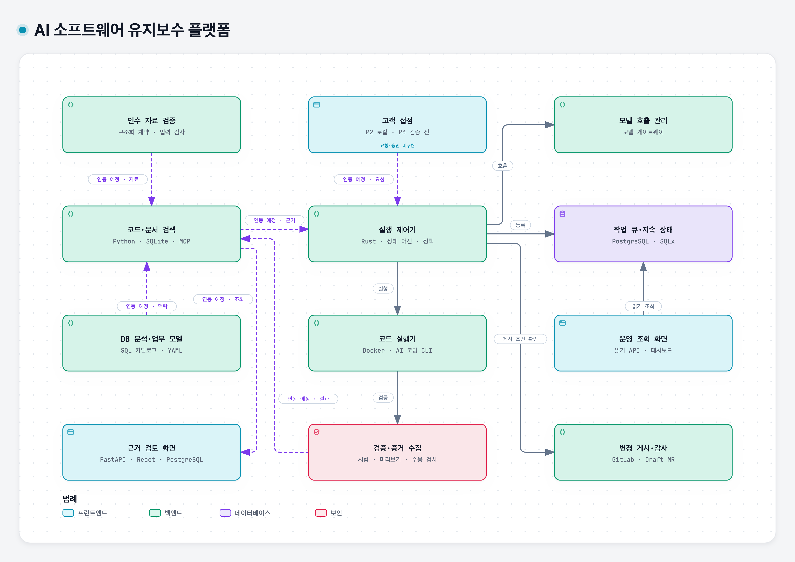
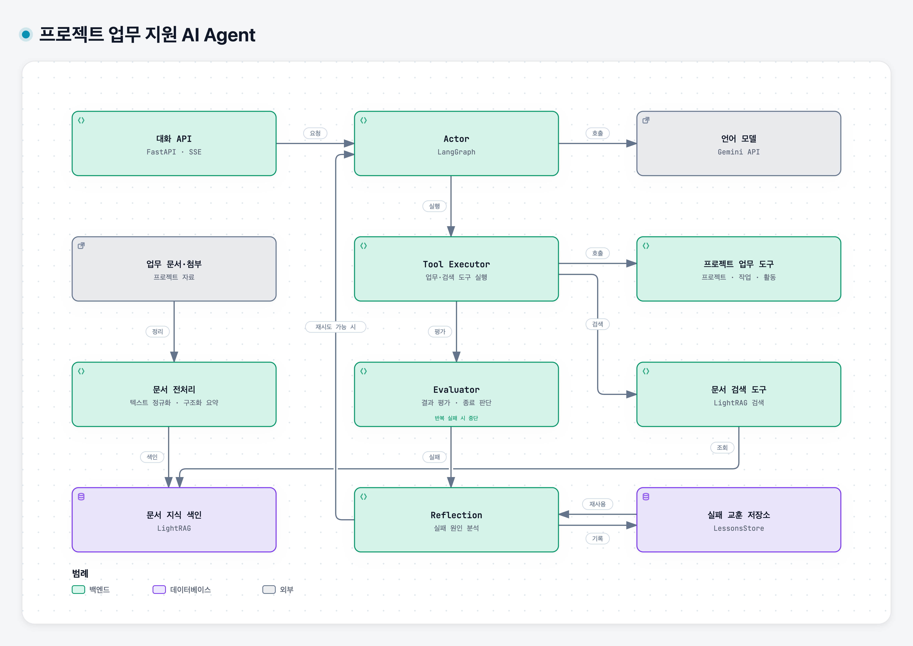
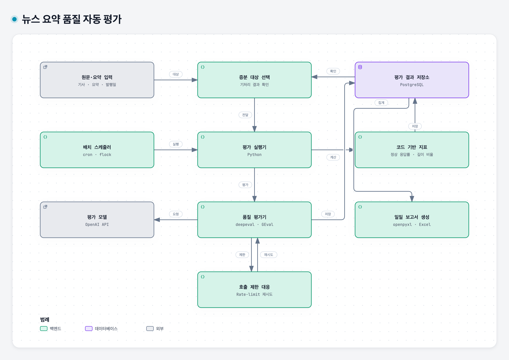
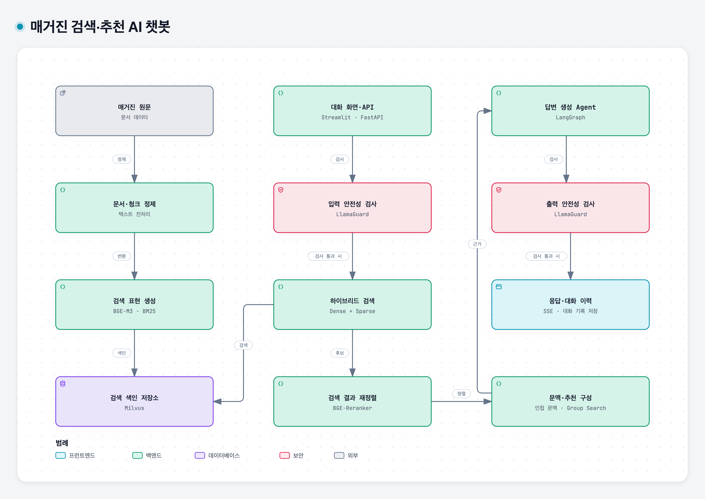
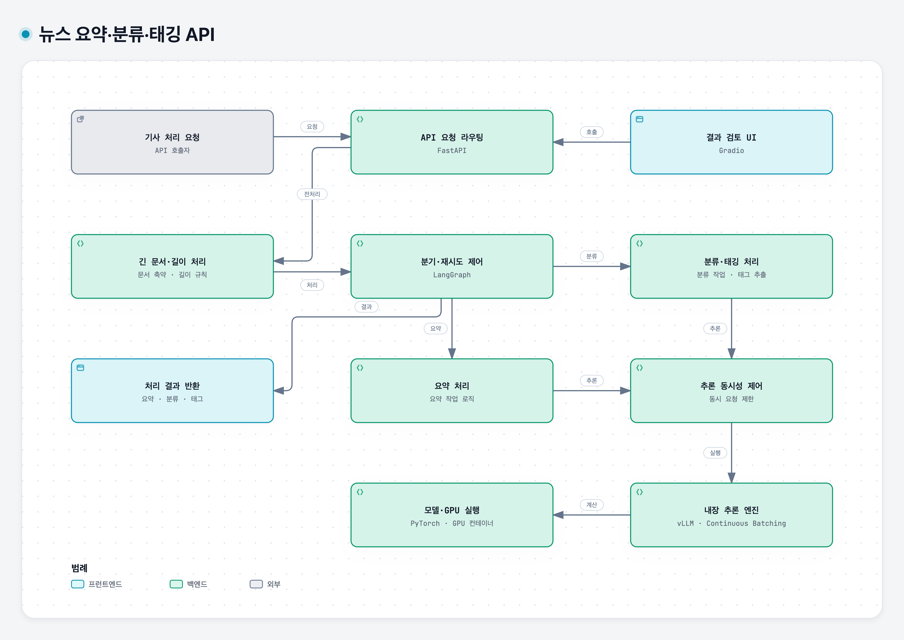
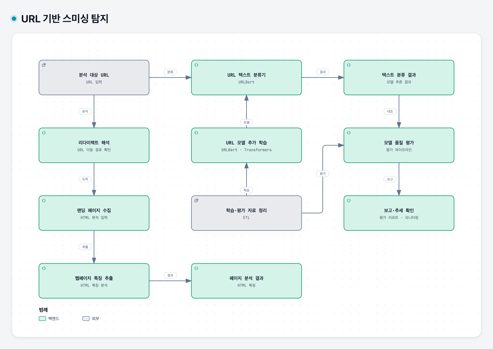
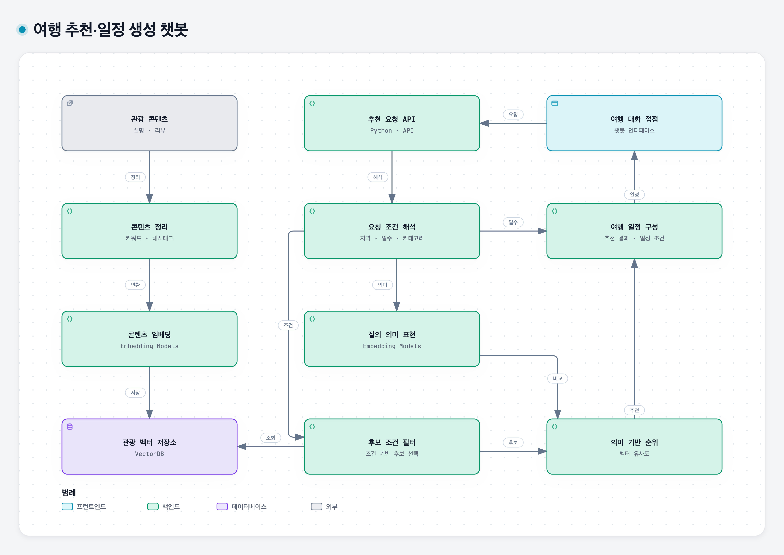
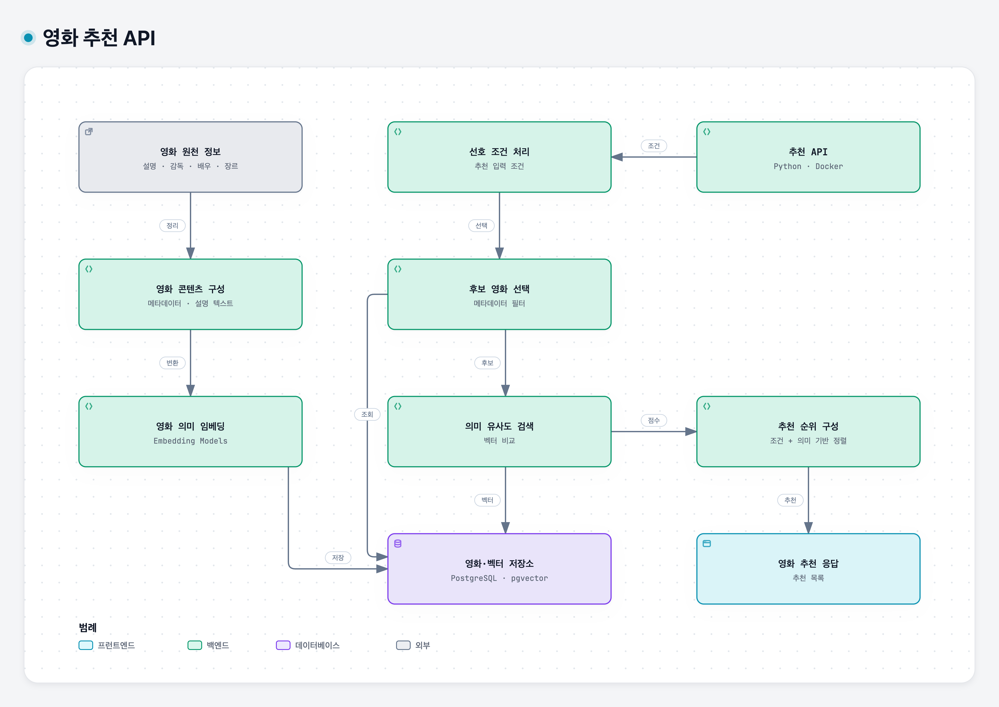
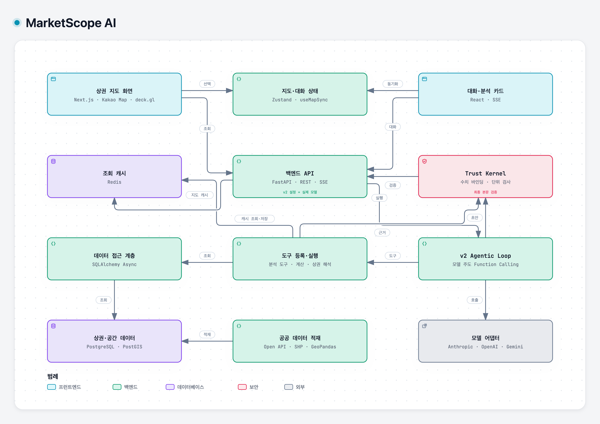
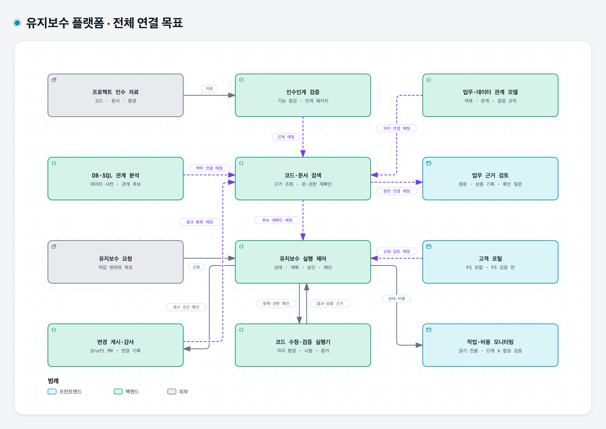

AI 소프트웨어 유지보수 플랫폼
개발 중 · 실선: 모듈 구현 관계 · 점선: 연동 설계 · 전체 운영 통합은 진행 중
김선준 · AI Agent·LLM 응용 엔지니어
회사 프로젝트 8개와 개인 프로젝트 1개의 구성요소, 연결 관계와 설계 선택을 정리했습니다. 도식을 열면 노드와 연결을 탐색하고 근거 문서를 확인할 수 있습니다.
회사 프로젝트는 공개 경력 문서의 개념도이며, 독립 배포 단위나 현재 운영 완료를 뜻하지 않습니다. MarketScope는 공개 코드의 고정된 판을 기준으로 했습니다. 구현 상태와 검증 범위는 각 도식의 설명에 표시했습니다.

개발 중 · 실선: 모듈 구현 관계 · 점선: 연동 설계 · 전체 운영 통합은 진행 중

Actor → Tool Executor → Evaluator → Reflection · 반복 실패 시 중단하고 교훈을 재사용

평가 기준: 내용·날짜·사실성·문체·형식 · 기처리 결과 제외와 호출 제한 재시도 적용

의미 검색 + 키워드 검색 → 재정렬 → 문맥·매거진 단위 구성 → 입출력 안전성 검사

FastAPI 프로세스 안에 vLLM 엔진 내장 · GPU 컨테이너: Docker + NVIDIA Container Toolkit

URL 문자열 분류 / 리다이렉트·HTML 특징 분석 / 학습 자료 준비·반복 평가·추세 보고

지역·일수·카테고리 조건 반영 → 후보 필터 → 의미 유사도 순위 → 여행 일정 구성

PostgreSQL 안에서 메타데이터와 pgvector 임베딩을 함께 조회 · 조건 필터와 의미 기반 순위를 결합

v2 설정 + 실제 모델: Agentic Loop · Mock·PAE 설정: 레거시 경로 · 최종 답변 본문은 수치 근거 검사 후 전송

개별 구현과 예정 연동을 구분한 전체 연결 목표